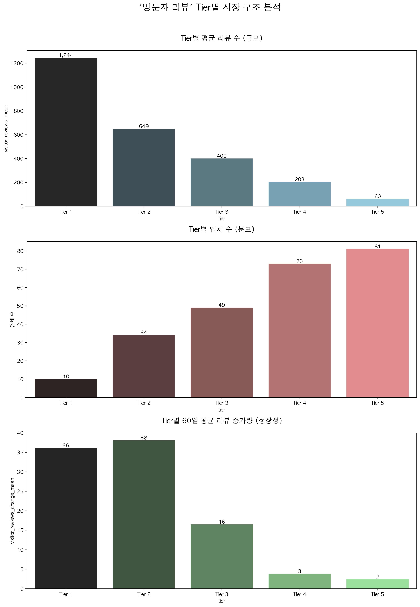
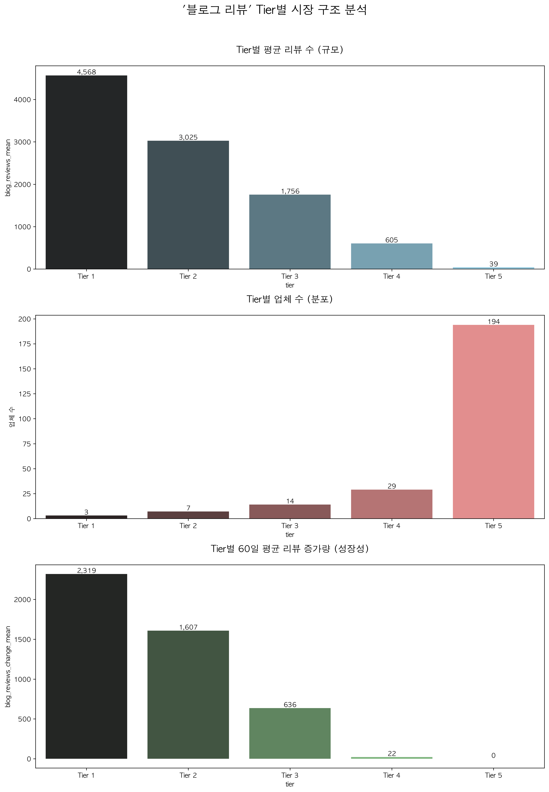
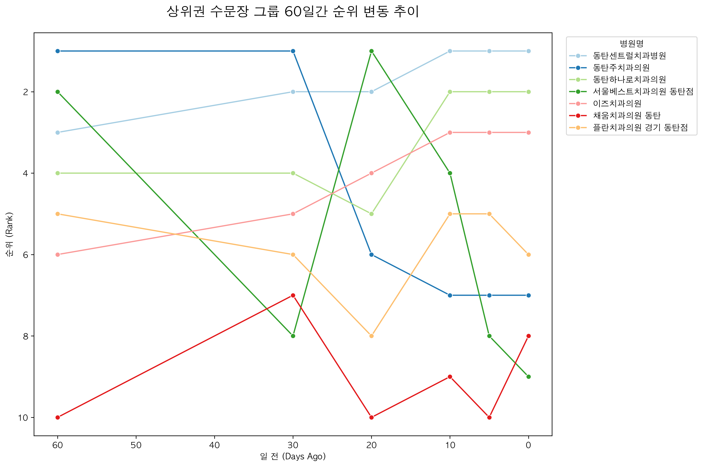
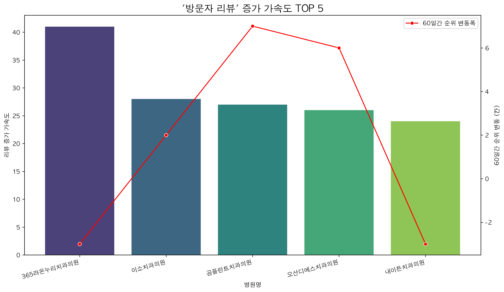
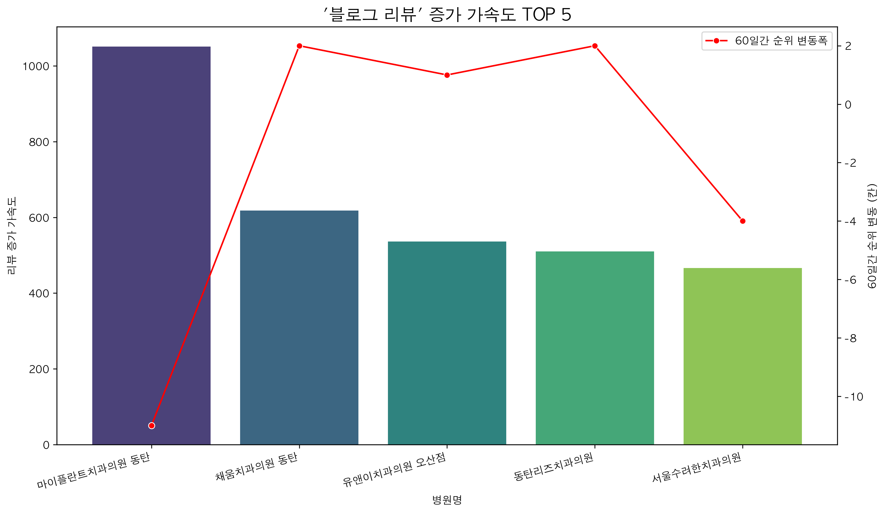
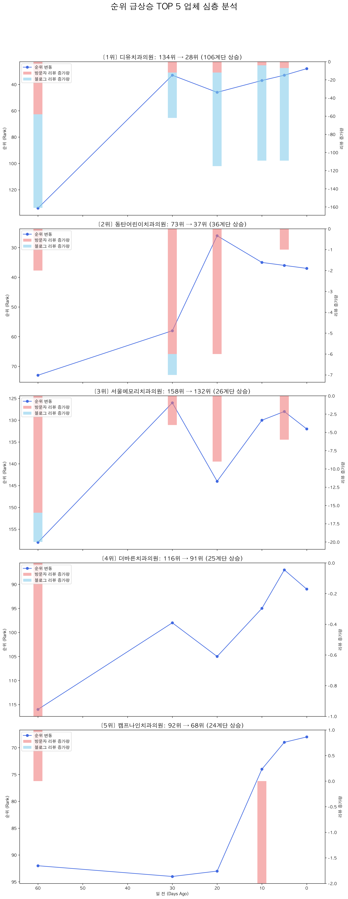
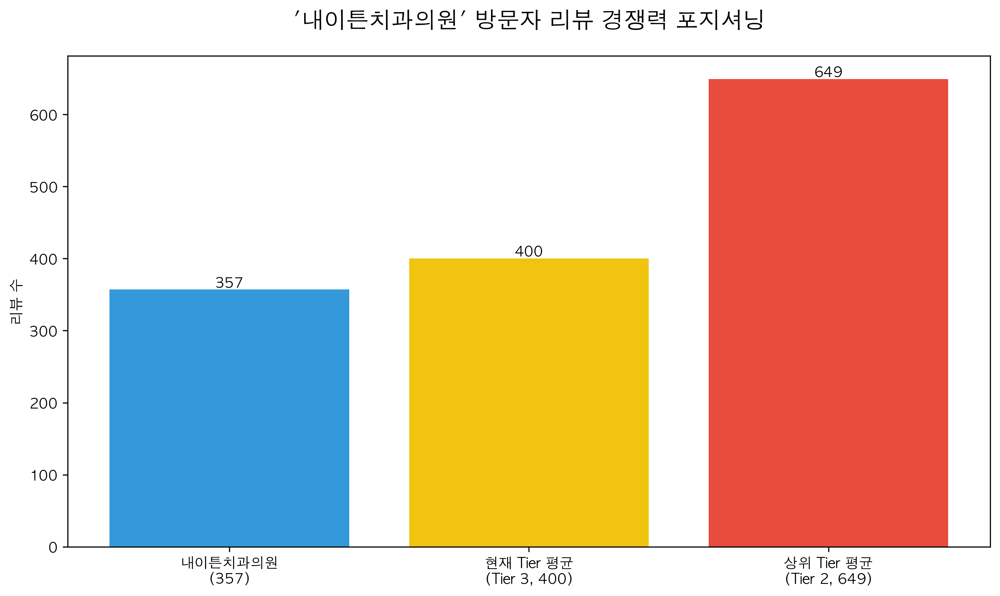
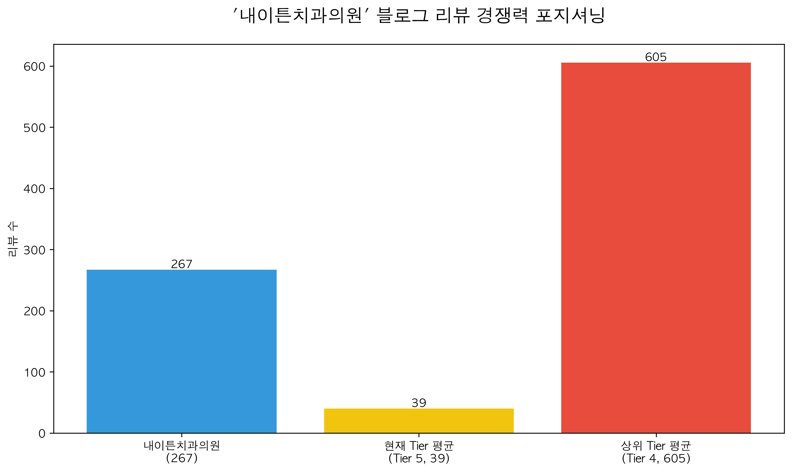

[V9.5] '동탄치과' 시장 동적 분석 및 경쟁 전략 심화 보고서
시장 동향 요약: Tier별 시장 구조와 경쟁 현실
동탄치과 시장 동향 데이터 분석 보고서
데이터 분석 전문가로서 제공된 '동탄치과' 시장의 리뷰 데이터를 심층 분석하여, 시장의 구조적 특징, 경쟁 구도 및 성공 전략에 대한 인사이트를 도출했습니다.
1. 시장 구조 분석: '평판'의 방문자 리뷰 vs '자본'의 블로그 리뷰
동탄치과 시장은 '방문자 리뷰'와 '블로그 리뷰'라는 두 개의 뚜렷하게 다른 성격의 시장으로 구성되어 있습니다.
가. 방문자 리뷰 시장: 실력과 평판이 좌우하는 '피라미드형' 구조
- 구조적 특징: 전체 247개 업체가 Tier 1(10개)부터 Tier 5(81개)까지 비교적 완만한 피라미드 형태를 이루고 있습니다. 상위 Tier와 하위 Tier 간의 리뷰 수 격차(Tier 1 평균 1,244개 vs Tier 2 평균 649개)가 존재하지만, 블로그 리뷰 시장처럼 극단적이지 않습니다.
- 시장 성격 규정:
평판 기반 시장 (Reputation-based Market)
- 방문자 리뷰는 실제 내원 환자들의 경험과 만족도가 누적된 결과입니다.
- 리뷰 수의 분포는 장기간에 걸쳐 쌓아온 의료 서비스 품질, 환자 관리 능력, 그리고 지역 내 인지도가 반영된 결과로 해석됩니다.
- 단기간의 마케팅 활동만으로는 상위 Tier 진입이 어려운, 신뢰와 시간이 중요한 시장입니다.
나. 블로그 리뷰 시장: 마케팅 자본이 지배하는 '초 양극화' 구조
- 구조적 특징: 극심한 양극화(Polarization) 현상을 보입니다. 최상위 Tier 1(3개), Tier 2(7개) 등 단 10개 업체(전체의 약 4%)가 시장을 압도적으로 지배하고 있습니다. 반면, Tier 5에만 194개(전체의 약 79%)의 업체가 몰려 있으며, 이들의 평균 리뷰 수는 39.9개에 불과합니다.
- 시장 성격 규정:
마케팅/자본 기반 시장 (Marketing/Capital-based Market)
- 수천 개에 달하는 블로그 리뷰는 자연 발생적으로 생성되기 불가능하며, 이는 대규모 마케팅 비용 투입의 직접적인 결과입니다.
- 시장의 진입장벽이 매우 높으며, 상위 Tier는 막대한 자본력을 바탕으로 한 '마케팅 전쟁'의 승자들로 볼 수 있습니다.
- 하위 업체들은 사실상 이 경쟁에 참여하기 어려운 구조입니다.
2. 경쟁 강도 및 성장 동력 분석
최근 60일간의 리뷰 증가량 데이터는 두 시장의 성장 동력과 경쟁 양상이 완전히 다름을 명확히 보여줍니다.
가. 블로그 리뷰 시장: 상위권의 '굳히기'와 '부익부 빈익빈' 심화
- 성장 동력: 압도적인 마케팅 투자
- Tier 1과 Tier 2는 60일간 평균 2,319개, 1,607개의 경이로운 리뷰 증가량을 보입니다. 이는 기존의 우위를 유지하기 위해 지속적으로 막대한 마케팅 자원을 투입하고 있음을 의미합니다.
- 경쟁 양상: '부익부 빈익빈(Rich-get-richer)'의 고착화
- 상위 10개 업체가 시장의 성장을 독식하며 후발주자들과의 격차를 기하급수적으로 벌리고 있습니다.
- Tier 5의 평균 증가량이 마이너스(-0.3)인 것은, 하위 업체들이 경쟁을 포기했거나 기존 리뷰의 이탈/삭제가 발생하고 있음을 시사합니다. 이 시장에서 하위 업체의 성장은 거의 불가능에 가깝습니다.
나. 방문자 리뷰 시장: 중위권의 '약진'과 역전 가능성
- 성장 동력: 실제 의료 서비스 만족도 및 신규 환자 유입
- 가장 주목할 점은 Tier 2의 평균 리뷰 증가량(38.1개)이 Tier 1(36.1개)을 앞섰다는 것입니다. 이는 시장 지위가 고정되어 있지 않으며, 실제 환자 만족도를 높이는 노력을 통해 상위권으로 도약할 수 있음을 보여주는 매우 긍정적인 신호입니다.
- 경쟁 양상: 치열하지만 건강한 '실력 경쟁'
- 상위권이 성장을 독점하는 구조가 아닙니다. Tier 2와 Tier 3(평균 16.5개 증가) 그룹은 활발하게 신규 환자를 유치하고 만족도를 높이며 성장하고 있습니다.
- 특히 Tier 2의 높은 표준편차(48.1)는 해당 그룹 내에서도 일부 치과들이 폭발적인 성장을 통해 Tier 1을 위협하고 있음을 암시합니다. 즉, 경쟁을 통해 순위 변동이 가능한 역동적인 시장입니다.
3. 종합 결론: 동탄치과 시장 핵심 성공 전략
위 분석을 종합하여 동탄치과 시장에서 성공하기 위한 핵심 전략을 다음과 같이 제언합니다.
전략 1: '방문자 리뷰'를 모든 전략의 초석으로 삼아라.
블로그 리뷰 시장은 소수 상위권의 '쩐의 전쟁'터이므로, 대부분의 치과에겐 비효율적인 전쟁터입니다. 반면, 방문자 리뷰는 환자 만족도라는 본질적인 경쟁력만으로 성장이 가능한 '기회의 땅'입니다. 따라서 모든 마케팅과 운영의 중심을 실제 환자 경험 개선과 진성 방문자 리뷰 확보에 두어야 합니다.
전략 2: '블로그 리뷰'는 양이 아닌 '질'과 '타겟팅'으로 접근하라.
블로그 리뷰 경쟁에서 수량으로 상위권을 따라잡는 것은 불가능합니다. 따라서 전략을 수정해야 합니다.
* 선택과 집중: 임플란트, 교정, 심미치료 등 특정 고부가가치 진료 과목에 대한 전문성을 보여주는 소수의 질 높은 정보성 콘텐츠에 집중하십시오.
* 목표 전환: '리뷰 개수'가 아닌, 잠재 고객에게 '신뢰감'과 '전문성'을 어필하는 것을 목표로 삼아야 합니다.
전략 3: 현재 나의 Tier에 맞는 맞춤형 전략을 실행하라.
- 상위권 (Tier 1~2): 방문자 리뷰에서의 높은 만족도를 유지하며(수성 전략), 블로그 마케팅은 현재의 지배력을 유지하는 선에서 효율화해야 합니다.
- 중위권 (Tier 2~3): 성장의 황금기입니다. 방문자 리뷰 증가율이 가장 높은 구간이므로, 환자 경험 극대화에 모든 자원을 집중하여 Tier 1으로의 도약을 노려야 합니다. 동시에 특정 진료과목 타겟팅 블로그 마케팅을 병행하여 시너지를 창출할 수 있습니다.
- 하위권 (Tier 4~5): 블로그 리뷰에 대한 미련을 버리고, 오직 '방문자 리뷰'에만 집중해야 합니다. 한 명 한 명의 환자에게 최상의 경험을 제공하여 긍정적인 입소문과 리뷰를 쌓는 것만이 생존과 성장의 유일한 길입니다.


경쟁 구도 심층 분석: 수문장과 가속 그룹
'동탄치과' 시장 경쟁 구도 심층 분석
'동탄치과' 시장은 기존의 강자들이 굳건히 자리를 지키는 '수문장 그룹'과, 공격적인 온라인 마케팅으로 빠르게 순위를 넘보는 '가속도 그룹' 간의 경쟁이 뚜렷하게 나타나고 있습니다. 두 그룹의 특징과 경쟁 동향을 심층적으로 분석한 결과는 다음과 같습니다.
1. '수문장 그룹' 분석: 견고한 성채, 높은 진입장벽
'수문장 그룹'은 60일 전과 현재 모두 TOP 10 순위를 안정적으로 유지하고 있는 7개 치과로, 동탄 시장의 터줏대감 역할을 하고 있습니다.
[수문장 그룹]: 동탄센트럴치과병원, 동탄주치과의원, 동탄하나로치과의원, 서울베스트치과의원 동탄점, 이즈치과의원, 채움치과의원 동탄, 플란치과의원 경기 동탄점
(1) 그룹 특징
* 강력한 브랜드 신뢰도: 이들은 오랜 기간 동안 지역 사회에서 꾸준히 진료하며 환자들과 깊은 신뢰 관계를 구축했습니다. '동탄'이라는 키워드와 함께 연상되는 대표적인 치과들입니다.
* 안정적인 환자 기반: 신규 환자 유치 경쟁을 넘어, 기존 환자들의 재방문과 가족 단위의 방문, 지인 추천을 통해 안정적인 매출 구조를 확보했을 가능성이 높습니다.
* 입증된 의료 서비스 품질: 높은 순위를 장기간 유지한다는 것은 의료진의 실력, 최신 장비, 환자 응대 등 전반적인 의료 서비스의 질이 시장에서 검증되었음을 의미합니다.
(2) 시장에 미치는 영향
* 시장 안정성 기여: 이 그룹의 존재는 동탄 치과 시장의 가격이나 서비스 품질이 급격히 변동하는 것을 막아주는 안정적인 '닻(Anchor)' 역할을 합니다. 환자들은 언제든 믿고 찾을 수 있는 선택지를 보장받습니다.
* 높은 진입장벽 형성: 신규 치과가 시장에 진입하기 위해서는 이 '수문장 그룹'이 쌓아 올린 브랜드 인지도와 신뢰라는 높은 벽을 넘어야 합니다. 단순히 진료를 잘하는 것을 넘어, 이들과 경쟁할 수 있는 마케팅 역량과 자본력이 필수적입니다.
2. '가속도 그룹' 분석: 두 개의 엔진, '신뢰'와 '인지도'
'가속도 그룹'은 최근 60일간 리뷰 수가 폭발적으로 증가하며 순위 상승을 노리는 공격적인 경쟁자들입니다. 이들의 성장은 '방문자 리뷰'를 통한 신뢰도 확보와 '블로그 리뷰'를 통한 인지도 확산이라는 두 가지 축으로 나눌 수 있습니다.
(1) '방문자 리뷰' 가속 그룹: 내실을 다지는 신뢰 전략
[주요 업체]: 365라온누리치과의원, 이소치과의원, 곰플란트치과의원 등- 성장 특징: 이 그룹은 실제 환자들의 경험이 반영되는 '방문자 리뷰' 확보에 집중합니다. 이는 단기적인 마케팅 비용 지출보다는 환자 만족도 향상, 친절한 응대, 리뷰 작성 독려 캠페인 등 내부적인 노력의 결과일 가능성이 높습니다.
- 성장의 의미:
- '입소문'의 디지털화: 방문자 리뷰는 온라인상의 '입소문'입니다. 이 그룹은 환자들의 긍정적인 경험을 온라인으로 확산시켜 잠재 고객에게 높은 신뢰감을 주고 있습니다.
- 지속 가능한 성장 기반: 광고성 리뷰와 달리, 실제 환자 경험에 기반한 평판은 쉽게 무너지지 않는 견고한 성장 동력이 됩니다. 이는 중하위권 치과가 상위권으로 도약하기 위한 가장 정석적인 방법입니다.
(2) '블로그 리뷰' 가속 그룹: 시장 판도를 흔드는 공중전 전략
[주요 업체]: 마이플란트치과의원, 채움치과의원, 유앤이치과의원, 동탄리즈치과의원 등- 성장 특징: 이 그룹은 단기간에 대규모 '블로그 리뷰'를 생성하며 압도적인 정보량으로 시장을 장악하려 합니다. 이는 전문적인 마케팅 대행사를 통한 전략적이고 공격적인 투자가 이루어지고 있음을 시사합니다. 특히
채움치과의원은 '수문장 그룹'에 속해 있음에도 블로그 리뷰를 폭발적으로 늘리며, 기존 강자 역시 현재의 순위에 안주하지 않고 치열하게 경쟁하고 있음을 보여줍니다.
- 성장의 의미:
- 빠른 인지도 확보: 특정 시술(예: 임플란트, 교정)에 대한 정보를 찾는 잠재 고객에게 자사 브랜드를 집중적으로 노출시켜 단기간에 인지도를 끌어올리는 가장 효과적인 방법입니다.
- 경쟁 구도 재편의 신호탄: 블로그 리뷰의 급증은 시장 점유율을 바꾸려는 강력한 의지의 표명입니다. 이들의 움직임은 '수문장 그룹'에게는 위협적인 도전이며, 전체 시장의 경쟁 강도를 높이는 기폭제 역할을 합니다.
3. 종합적 시사점: '신뢰'와 '인지도'의 하이브리드 전쟁
동탄치과 시장의 경쟁 구도를 통해 다음과 같은 핵심 동향과 시사점을 도출할 수 있습니다.
첫째, 경쟁의 핵심은 '온라인 평판 관리'입니다.
'수문장 그룹'의 아성은 오랜 기간 쌓아온 오프라인 신뢰가 기반이지만, '가속도 그룹'의 도전은 이 경쟁의 무대가 완전히 온라인으로 옮겨왔음을 보여줍니다. 이제 좋은 진료만으로는 부족하며, 그 경험을 어떻게 온라인 평판으로 전환하고 확산시키는지가 생존과 성장의 핵심이 되었습니다.
둘째, '신뢰'와 '인지도'는 상호보완적입니다.
* 방문자 리뷰 (신뢰): 환자가 병원 문을 열고 들어와 만족스러운 경험을 하게 만드는 '내실'입니다. 높은 신뢰도는 실제 전환율과 환자의 충성도를 높입니다.
* 블로그 리뷰 (인지도): 잠재 환자가 병원의 존재를 알게 하고, 검색 시 우선적으로 고려하게 만드는 '확성기'입니다. 높은 인지도는 신규 환자 유입의 기회를 창출합니다.
성공적인 치과는 블로그 마케팅으로 잠재 고객의 주목을 끌고(인지도), 방문한 고객에게 최고의 경험을 제공하여 긍정적인 방문자 리뷰를 쌓는(신뢰) 선순환 구조를 만들어야 합니다.
결론적으로, 동탄치과 시장은 견고한 '신뢰의 성'을 지키려는 수문장들과, 막강한 '인지도'의 대포를 쏘아대는 가속도 그룹 간의 치열한 공성전이 펼쳐지는 양상입니다. 앞으로 이 시장에서 살아남고 성장하기 위해서는, 의료 서비스의 질적 향상은 기본이며, 두 종류의 리뷰를 전략적으로 관리하는 '하이브리드 마케팅' 역량이 필수적인 경쟁력이 될 것입니다.



[핵심] 성공 방정식: '도전자'는 어떻게 순위를 올리는가?
'도전자' 그룹 성공 방정식 심층 분석
'도전자' 그룹(최근 60일간 순위 급상승 업체)의 성공 요인을 분석한 결과, '블로그 리뷰'를 통한 단기적이고 폭발적인 순위 상승과 '방문자 리뷰'를 통한 신뢰도 확보 및 순위 유지라는 두 가지 핵심 요소의 전략적 결합이 성공의 열쇠였음이 명확하게 드러났습니다.
1. '가속 엔진'으로서의 블로그 리뷰: 단기 순위 급상승의 주역
블로그 리뷰는 단기간에 특정 업체의 인지도와 정보량을 폭발적으로 증가시켜, 검색 알고리즘에 '주목해야 할 새로운 업체'라는 강력한 신호를 보냅니다. 이는 순위를 단기간에 급상승시키는 '가속 엔진' 역할을 합니다. '도전자' 그룹의 상위 업체들은 이 전략을 매우 효과적으로 활용했습니다.
사례 1: 오산본플란트치과의원 (가장 압도적인 사례)
- 수치 분석: 지난 60일간 블로그 리뷰가 무려 1,805개 폭증했습니다. 이는 TOP 10 업체 중 가장 압도적인 증가량입니다.
- 결과: 이러한 공격적인 블로그 마케팅에 힘입어 순위는 95위에서 74위로 21계단 상승했습니다. 방문자 리뷰 증가량(42개)에 비해 블로그 리뷰 증가량이 월등히 높아, 블로그 리뷰가 순위 상승의 직접적인 '엔진'이었음을 보여줍니다.
사례 2: 디유치과의원 (가장 극적인 순위 상승)
- 수치 분석: 60일간 블로그 리뷰가 463개 증가하며 순위 상승폭이 가장 큰 업체의 저력을 보여주었습니다.
- 결과: 순위가 134위에서 28위로 무려 106계단이나 수직 상승했습니다. 이는 블로그 리뷰의 대량 생성이 중하위권 업체를 단숨에 상위권으로 끌어올릴 수 있는 강력한 '로켓 부스터'임을 증명합니다.
사례 3: 서울포인트치과의원 (블로그 리뷰의 효율성 증명)
- 수치 분석: 방문자 리뷰는 단 3개 늘어난 반면, 블로그 리뷰는 338개나 증가했습니다.
- 결과: 순위는 35위에서 14위로 21계단 상승하며 최상위권에 진입했습니다. 이는 실제 방문객 증가와 무관하게, 오직 블로그 리뷰만으로도 순위를 크게 끌어올릴 수 있다는 점을 명확히 보여주는 사례입니다.
2. '신뢰 기반'으로서의 방문자 리뷰: 순위 방어와 신뢰의 발판
블로그 리뷰가 단기적인 '가속 엔진'이라면, 방문자 리뷰는 상승한 순위를 지키고 사용자의 최종 선택을 이끌어내는 '신뢰의 발판'이자 '순위 방어선'입니다.
'신뢰의 발판' 역할 (블로그 리뷰의 설득력 강화):
사용자들은 수많은 블로그 리뷰(마케팅)를 보고 업체를 인지한 후, 실제 방문객들이 남긴 '방문자 리뷰'를 통해 신뢰도를 검증합니다. 디유치과의원의 경우, 463개의 블로그 리뷰로 유입된 잠재 고객들에게 93개나 증가한 실제 방문자 리뷰는 '마케팅뿐만 아니라 실제 만족도도 높은 곳'이라는 인식을 주어 신뢰를 공고히 합니다. 만약 블로그 리뷰만 폭증하고 방문자 리뷰가 없었다면, 사용자는 이를 '광고성 콘텐츠'로 판단하고 이탈했을 가능성이 높습니다.
'순위 방어선' 역할 (장기적 안정성 확보):
블로그 마케팅 캠페인이 종료되면 그 효과는 점차 감소할 수 있습니다. 이때, 꾸준히 쌓이는 양질의 방문자 리뷰는 검색 알고리즘에 '이 업체는 지속적으로 좋은 서비스를 제공하고 있다'는 긍정적 신호를 보내 순위 하락을 막는 방어선 역할을 합니다. 오산본플란트치과의원은 1,805개의 블로그 리뷰로 순위를 올렸지만, 이미 1,700개가 넘는 탄탄한 기존 방문자 리뷰 베이스가 있었기에 그 효과가 극대화될 수 있었습니다. 이 방문자 리뷰들이 없었다면, 블로그 리뷰의 폭증은 오히려 '스팸'으로 인식될 위험도 있었습니다.
결론적으로, 블로그 리뷰는 잠재고객의 '눈길'을 사로잡고, 방문자 리뷰는 그들의 '마음'을 사로잡아 최종 방문으로 이끕니다. 이 두 리뷰의 상호작용은 일회성 순위 상승이 아닌, 지속 가능한 성공을 만드는 핵심적인 메커니즘입니다.
3. '도전자' 그룹의 성공 방정식
위 분석을 종합하여 '도전자' 그룹의 성공 방정식을 한 문장으로 정의하면 다음과 같습니다.
'도전자' 그룹의 성공 방정식은 단기간에 대량의 '블로그 리뷰'를 '가속 엔진'으로 삼아 순위를 폭발적으로 끌어올리고, 꾸준히 축적된 '방문자 리뷰'를 '신뢰 기반'으로 삼아 상승한 순위를 방어하고 유지하는 것이다.

우리의 현주소: '내이튼치과의원' 종합 진단 및 최종 전략
내이튼치과의원 맞춤 진단 및 성장 전략 제안
병원 전문 마케팅 컨설턴트로서 제공해주신 데이터를 바탕으로 내이튼치과의원의 현재 상황을 진단하고, 즉시 실행 가능한 구체적인 성장 전략(Action Plan)을 제안합니다.
1. 핵심 진단 (Executive Summary)
현재 내이튼치과의원은 최근 60일간 온라인 경쟁 순위가 3계단 하락했으며, 실제 내원 환자들의 만족도(방문자 리뷰 Tier 3)는 양호한 편이나, 온라인상에서 병원의 전문성과 정보를 알리는 콘텐츠 경쟁력(블로그 리뷰 Tier 5)은 최하위 수준에 머물러 있습니다. 문제의 본질은 '좋은 진료 경험'이라는 핵심 자산이 온라인상의 '정보 부재'로 인해 잠재 환자에게 전혀 전달되지 못하고 있으며, 이로 인해 신규 환자 유치 경쟁에서 뒤처지고 있다는 것입니다.
2. 상황 분석
1) 순위 변동의 의미: '보이지 않는 병원'으로 전락할 위험 신호
최근 60일간 3계단 순위 하락은 시장의 평균 성장 속도에도 미치지 못하고 있음을 의미합니다. 이는 경쟁 병원들이 온라인 마케팅 활동(예: 블로그 포스팅, 키워드 광고, 후기 관리 등)을 적극적으로 펼치며 잠재 환자들의 온라인 검색 결과를 선점하고 있다는 명백한 증거입니다. 가만히 있는 것이 아니라, 뒤처지고 있는 상황입니다. 이 추세가 계속될 경우, 내이튼치과의원은 '실력은 있지만 아무도 모르는' 병원이 되어 신규 환자 유입에 심각한 타격을 입게 될 것입니다.
2) 강점/약점 분석: '경험'과 '인지'의 극심한 불균형
3. 최종 전략 및 Action Plan
전략 방향
'실제 환자의 긍정적 경험(Tier 3 강점)'을 기반으로, '전문성 있는 온라인 콘텐츠(Tier 5 약점 보완)'를 제작 및 확산하여 잠재 고객의 신뢰를 확보하고 디지털 경쟁력을 강화한다.
Action Plan
아래 Action Plan은 즉시 실행할 수 있도록 3단계로 구성되었습니다.
Phase 1: 콘텐츠 기획 (Planning) - '무엇을 말할 것인가?'
- 누가: 원장님, 실장님, 마케팅 담당자(혹은 지정 직원)
- 무엇을:
- 핵심 타겟 환자 정의: 우리 병원에 가장 많이 오거나, 왔으면 하는 환자층(예: 20-30대 직장인, 50-60대 임플란트 환자)을 구체적으로 정의합니다.
- 환자 궁금증 리스트업: 타겟 환자들이 진료 전/후에 실제로 질문하는 내용 30개를 목록으로 만듭니다. (예: "임플란트 수술 많이 아픈가요?", "신경치료는 몇 번 받아야 하나요?")
- 핵심 진료 과목 키워드 선정: 우리 병원이 가장 자신 있는 진료 3가지(예: 임플란트, 심미보철, 충치치료)를 정하고, 관련 검색 키워드를 조합합니다. (예: '강남역 치과 임플란트', '선릉역 직장인 스케일링')
- 어떻게:
- 주 1회, 30분 '콘텐츠 회의'를 정기적으로 진행합니다.
- 회의에서 결정된 '환자 궁금증'과 '키워드'를 구글 시트 등 공유 문서에 기록하고 관리하여 콘텐츠의 '재료'를 체계적으로 축적합니다.
Phase 2: 제작/확산 (Production/Distribution) - '어떻게 보여줄 것인가?'
- 누가: 마케팅 담당자(제작 주도), 원장님(의학 정보 감수)
- 무엇을:
- '원장님이 답해드립니다' 시리즈 제작: Phase 1에서 수집한 환자 질문에 대해 원장님이 직접 답변하는 형식의 전문성 있는 블로그 포스팅을 제작합니다. (텍스트와 함께 원장님 사진 포함 시 신뢰도 급상승)
- '치료 과정/사례' 콘텐츠 제작: 환자 동의 하에 비포/애프터 사진이나 치료 과정을 단계별로 설명하는 콘텐츠를 만듭니다. 이는 잠재 환자의 불안감을 해소하고 신뢰를 줍니다.
- '우리 병원 이야기' 콘텐츠 제작: 병원의 철학, 새로운 장비 도입, 위생/소독 시스템 등 방문자 리뷰(Tier 3)의 강점을 뒷받침하는 진정성 있는 이야기를 전달합니다.
- 어떻게:
- 네이버 공식 블로그를 개설하고, 주 2회 이상 꾸준히 포스팅합니다.
- 포스팅 하단에 [전화 문의], [카카오톡 상담], [네이버 예약] 버튼을 반드시 삽입하여 문의로 연결되도록 유도합니다.
- 제작된 콘텐츠를 병원 내 인스타그램, 페이스북, 카카오톡 채널 등 보유한 채널에 공유하여 확산시킵니다.
Phase 3: 분석/최적화 (Analysis/Optimization) - '제대로 가고 있는가?'
- 누가: 마케팅 담당자, 실장님
- 무엇을:
- 블로그 유입 데이터 분석: 네이버 블로그 통계를 통해 어떤 게시글의 조회수가 높은지, 어떤 키워드로 유입되는지 파악합니다.
- 문의 채널 분석: "블로그 보고 전화했어요" 등 유입 경로를 내원 환자에게 직접 질문하여 어떤 콘텐츠가 실질적인 효과를 내는지 확인합니다.
- 경쟁사 벤치마킹: 상위권에 있는 경쟁 병원들은 어떤 주제로, 어떤 형식의 콘텐츠를 만드는지 정기적으로 분석합니다.
- 어떻게:
- 월 1회 '마케팅 성과 보고' 시간을 갖고, 잘된 점과 개선점을 논의합니다.
- 분석 결과를 바탕으로 Phase 1의 '콘텐츠 기획'에 다시 반영하여 지속적으로 콘텐츠를 개선해 나갑니다. (예: '임플란트' 관련 글의 반응이 좋았다면, 다음 달에는 '임플란트 종류별 장단점' 등 심화 주제로 확장)
결론
내이튼치과의원은 '숨겨진 보석'과 같습니다. 지금 필요한 것은 화려한 기교가 아니라, 우리가 가진 '진정성 있는 진료'라는 보석을 잠재 환자들이 발견할 수 있도록 온라인에 '길'을 닦는 작업입니다. 위 Action Plan을 3개월 이상 꾸준히 실행하신다면, 하락한 순위를 회복하는 것을 넘어 시장을 주도하는 병원으로 성장할 수 있을 것입니다.

